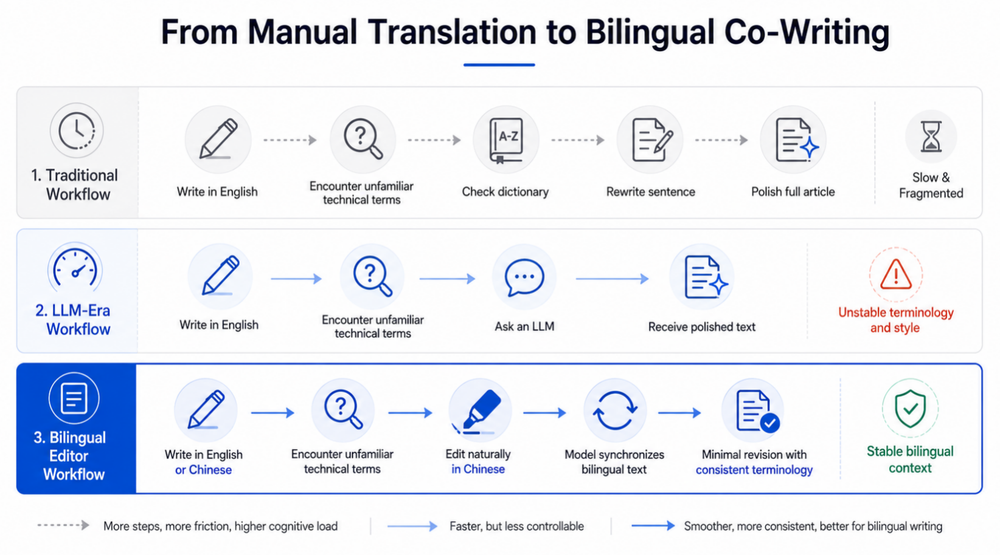

Overleaf-style layout
Source, translation, outline, and review notes stay in one compact workspace.
Bilingual Editor is an Overleaf-inspired workspace for translating, revising, and reviewing LaTeX, Markdown, Word, and plain-text documents without leaving the document context.
Source
Large language models have become a practical interface for scientific writing.
Researchers still need reliable bilingual revision.
Translation
大型语言模型已成为科学写作的 实用接口。
研究人员仍需要可靠的双语修订流程。
The core shift is moving from fragmented lookup-and-rewrite loops to a bilingual editing workflow where terminology, revision context, and translation stay together.

The editor keeps the original document and its translated version visible at the same time. Users can edit either side, add review comments as guidance, and trigger model-based synchronization with minimal changes to the opposite side.
Source, translation, outline, and review notes stay in one compact workspace.
Idle and manual sync submit local context to an OpenAI-compatible translation API.
Selected comments become revision suggestions for grammar, wording, and terminology.
The live demo runs on Vercel. This GitHub Pages site is the project introduction page.
The editor targets source-like documents and common writing formats used in academic and technical workflows.